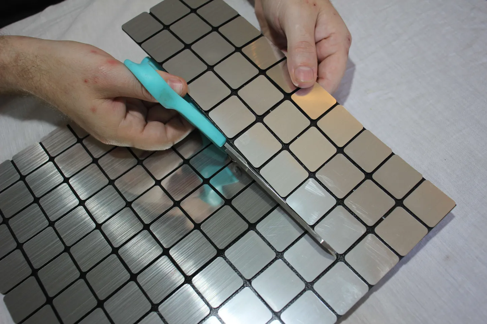
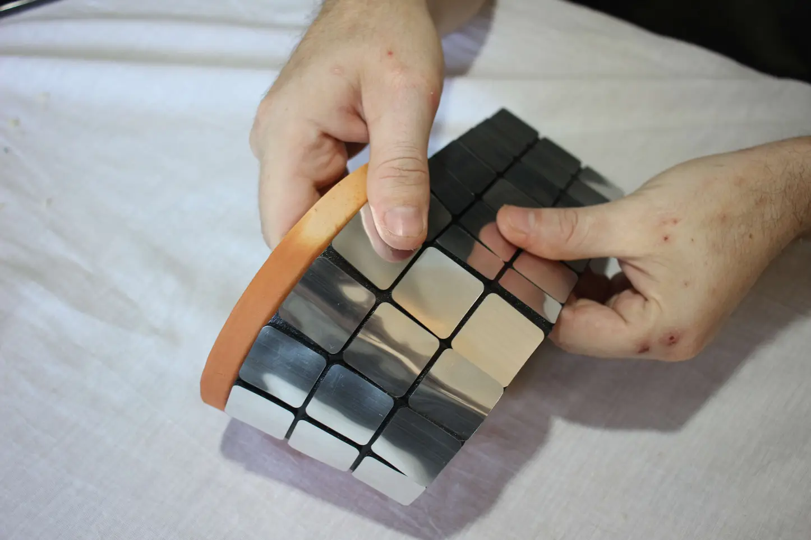
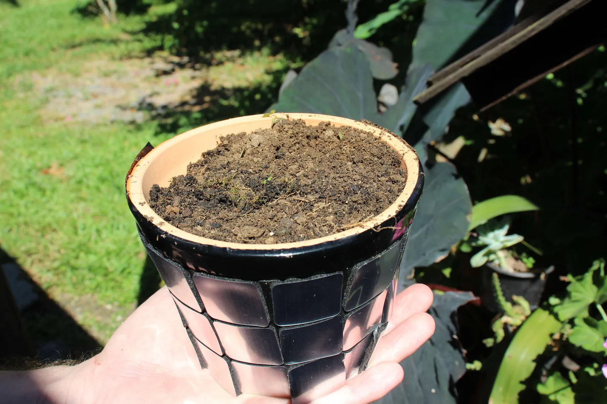
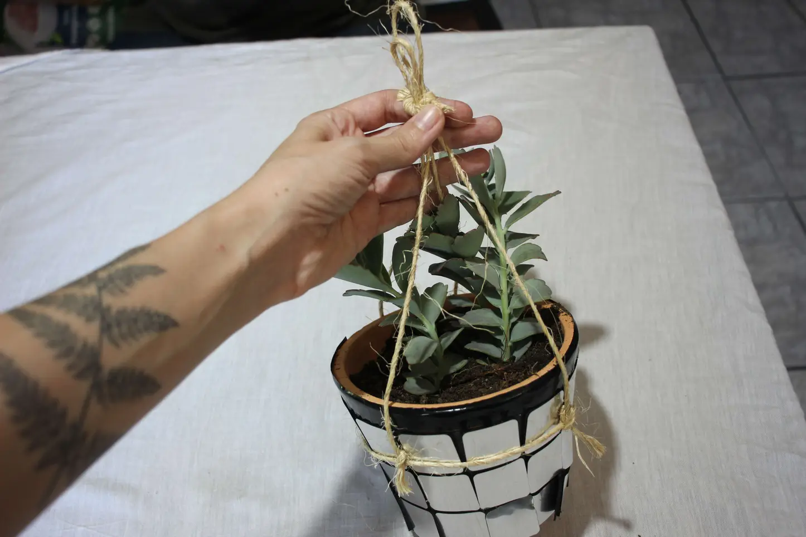
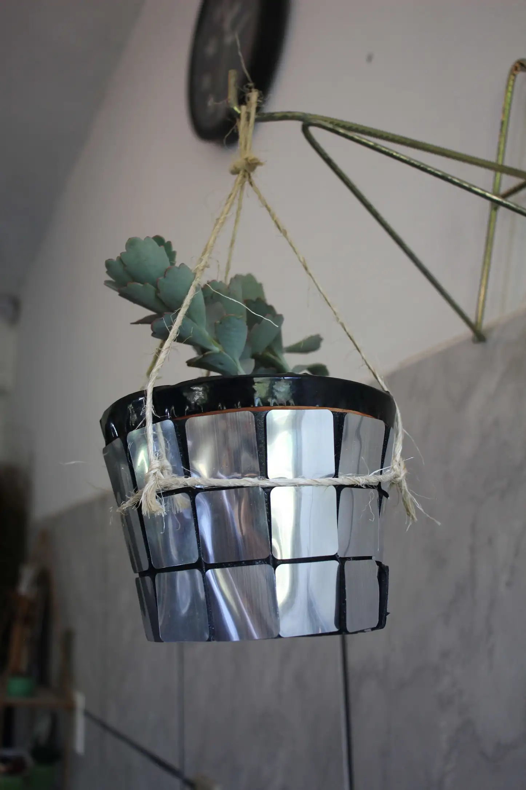

Description
Are you looking to infuse your indoor garden with a dose of disco charm? Meet the DIY Disco Ball Planter – an inventive fusion of lush greenery and dazzling disco balls. This project promises to enliven your living space with its unique blend of natural beauty and retro glamour. Prepare to turn heads and spark conversations with this simple yet captivating home decor piece. Having personally witnessed its allure, I can attest to the curiosity it ignites among visitors! Follow along in this 6-step guide as I reveal how to effortlessly transform an ordinary plant pot into a mesmerizing disco ball planter.
Let's add sparkle to your plants with a DIY disco ball planter!
Make your own disco ball hanging planter in just 6 steps
One exciting thing is that you can get all the materials you need at home; the self-adhesive glass is the only item you might need to buy.Materials
Self-adhesive glass
Plant pot
Soil
Plant
Scissors
Step 1: Trim the Self-Adhesive Glass
Start by trimming the self-adhesive glass to match the dimensions of your chosen plant pot. Employ scissors for precise cuts, ensuring a neat finish. This glass will function as a reflective surface, injecting a hint of sophistication into your indoor garden.
Helpful Tip: Measure twice, cut once! Double-check the dimensions of your plant pot before trimming the self-adhesive glass to ensure a perfect fit.
Step 2: Apply the Self-Adhesive Glass
Gently apply the self-adhesive glass onto the entire exterior of the plant pot. Smooth out any air bubbles to achieve seamless adherence. As the light catches this reflective surface, it will scatter and shimmer, casting a mesmerizing disco-ball effect.
Step 3: Fill with Soil
With the self-adhesive glass firmly in place, fill the plant pot with nutrient-rich soil. Opt for a premium potting mix tailored to your plant's specific requirements. Besides fostering healthy growth, the soil contributes to the overall visual appeal of your DIY disco planter.
Step 4: Plant Your Greenery

Now, it's time to introduce your chosen plant to its new disco-themed home. Select a plant that complements the size of your planter and the conditions of your indoor environment. Whether you opt for a striking succulent, a lush pothos, or a colourful bloom, position it centrally within the pot for balanced aesthetics.
Step 5: Secure with String
To transform your disco planter into a suspended masterpiece, securely fasten a string around the pot. Choose a robust string that aligns with the overall design and ensures the planter hangs at your desired height. This step adds versatility, enabling you to showcase your creation in various locations around your home.
Step 6: Voila, It's Complete!
Congratulations on completing your DIY Disco Planter! Hang it near a sunlit window and behold as the disco ball reflections dance across your space, infusing it with energy and charm. Not only does this project redefine indoor plant display, but it also underscores your ingenuity and flair for creativity.
In conclusion, your DIY Disco Planter stands as a testament to your creativity and personal style, adding a unique and eye-catching element to your home decor. As it sparkles and shines, it becomes a focal point of conversation among guests, igniting admiration and intrigue.
With each glance at your dazzling creation, may you be reminded of the joy found in crafting something with your own hands and the power of imagination to transform ordinary objects into extraordinary works of art. So, let your Disco Planter continue to brighten your space and bring a touch of retro-inspired magic to your home decor for years to come.